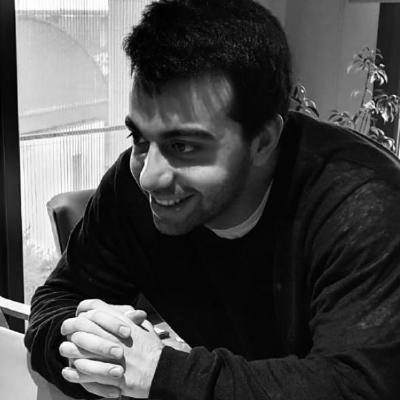

About The Workshop
Artificial intelligence is entering a new phase: from one-shot assistants to persistent agents that remember, act, and adapt across extended interactions. Recent work increasingly studies agents as stateful systems with memory, planning, tool use, and environment interaction, rather than static models evaluated only on short-horizon benchmarks. This shift makes the central challenge more concrete: how can agents continuously improve while remaining reliable, efficient, and aligned over time?
The notion of a lifelong agent offers a natural lens for this challenge. A lifelong agent should not only acquire new knowledge and skills, but also manage memory, personalize safely, interact with evolving tool ecosystems, and withstand long-term deployment without drift or brittle failures. This workshop brings these emerging directions under a unified agenda centered on agents that learn, align, and evolve throughout their lifespan.
As the third edition of the Lifelong Agents workshop, this event builds on earlier editions while moving the conversation toward next-stage questions: how learning changes alignment, how new tools alter reliability, how personalization affects oversight, and how persistent deployment demands new forms of evaluation and governance. By bringing together language agents, reinforcement learning, multimodal and embodied systems, human-AI interaction, evaluation, and AI safety, we aim to shape a coherent roadmap for agents that can be built responsibly and studied rigorously under real-world conditions.
Topics
Our topics include but are not limited to:
Long-term memory, preference modeling, memory governance, and adaptive personalization for agents operating across sessions.
Continual post-training, online adaptation, domain shift handling, and mechanisms for balancing plasticity and retention in deployed agents.
Agents that browse, operate interfaces, and learn from interaction in realistic digital environments, including structured exploration and long-horizon execution.
Protocol-based tool use, modular skill composition, delegation, and security challenges arising from interoperable agent ecosystems.
Evolving preferences, alignment drift, continual oversight, red-teaming, and agentic auditing methods for persistent systems.
Interactive benchmarks, execution traces, reproducibility, observability, and metrics for long-horizon reliability, recovery, and robustness.
Coordination, delegation, specialization, and collective adaptation in persistent multi-agent environments.
Resource-aware adaptation, efficient memory and retrieval, latency-cost tradeoffs, and sustainable deployment under real-world constraints.
Call for Papers
Share your work with the lifelong-agent community and help shape the next generation of agents that learn, align, and evolve.
The 3rd Workshop on Lifelong Agents at AIAS 2026 invites submissions on the development of lifelong agents that can continuously learn, maintain stable alignment, and sustainably evolve over extended deployment. We welcome novel architectures, algorithms, theoretical analyses, empirical studies, benchmarks, and real-world applications spanning topics such as agent post-training, agentic RL, user-agent alignment, self-evolving agents, embodied lifelong agents, and agents for science. Submissions must present original, unpublished research.
Key Dates
- Submission Deadline: October 10, 2026, AoE
- Acceptance Notification: October 15, 2026, AoE
- Workshop Date: November 7, 2026, San Francisco (PST)
Submission Site
Submissions are managed via OpenReview. Papers remain private during the review process. All authors must maintain up-to-date OpenReview profiles to ensure proper conflict-of-interest management and paper matching. Incomplete profiles may result in desk rejection.
Learn how to create an OpenReview profile here.
Access submissions and review information through the
AIAS 2026 Lifelong Agents Workshop on OpenReview .
Scope
We welcome contributions across a broad spectrum of topics related to our themes. Accepted papers will be presented as posters, with a subset selected for oral presentations. The workshop will take place in person at AIAS 2026 in San Francisco on November 7, 2026.Submission Guidelines
Formatting Requirements
Submissions must be in English and follow the EasyChair style LaTeX Template to be consistent with the main conference submissions.Papers must be submitted as a single PDF file:
- Long Papers: at most 9 pages (main text)
- Short Papers: at most 5 pages (main text)
- References and appendices are not included in the page limit, but the main text must be self-contained. Reviewers are not required to read beyond the main text.
Submissions exceeding the page limit will be desk rejected.
Anonymity
The workshop follows a double-blind review process. Submissions must be anonymized by removing author names, affiliations, and acknowledgments. Prior work should be cited in the third person. Identifying information, including in supplementary materials, must be omitted.Dual Submission and Non-Archival Policy
ICML, ICLR, NeurIPS, ACL, and EMNLP submissions are all welcome to submit to our workshop. You can submit your work if it's currently under review at other venues. The workshop is not archival.
Speakers
Meet the speakers for our invited talk and opening sessions.

University of Illinois Urbana-Champaign
Afternoon Session Opening Remarks
Schedule
Workshop program for November 7, 2026. All times are in San Francisco local time (PST, UTC−8). The invited talk includes Q&A.
| Time (PST) | Session | Speaker / Participants |
|---|---|---|
| 10:00 – 10:30 | Morning Session Opening Remarks | Cheng Qian |
| 10:30 – 11:30 | Poster Session | Poster Presenters |
| 11:30 – 12:00 | Invited Talk | Beibin Li |
| 12:00 – 14:00 | Lunch Break | All Attendees |
| 14:00 – 14:30 | Afternoon Session Opening Remarks | Emre Can Acikgoz |
| 14:30 – 15:30 | Oral Presentation | Contributing Authors |
Organizers
This workshop is organized by
University of Illinois Urbana-Champaign
University of Illinois Urbana-Champaign
Advisory Board
This workshop is advised by
University of Illinois Urbana-Champaign
University of Illinois Urbana-Champaign
University of Illinois Urbana-Champaign / Airbnb
Registration and Contact
Join us at AIAS 2026 in San Francisco on November 7, 2026.
Register through the AIAS 2026 registration page.
For questions about the workshop, presentations, or submissions, contact lifelongagent@googlegroups.com.